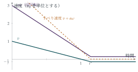

STEP III 1997、第10問
先に進む前に問題を読んでおこう。問題は STEP Support Programme の問題データベースにある： step.maths.org/questions/97-s3-q10
導入
ビー玉の後ろ側を指で押し下げると、ビー玉は後ろ向きに回転しながら前方へ飛び出す。ビー玉はすべりながら遠ざかり、減速して止まり、そしてまるで気が変わったかのように転がって戻ってくる。スヌーカー（snooker）の選手も「スクリュー」ショットや「ドロー」ショットで同じ効果を利用している。手球の下側を突いて後ろ向きの回転をかけると、手球は的球に当たった所で止まり、そこから戻ってくるのである。
この問題では、ビー玉をぴたりと止めるのに必要な逆回転（backspin）の正確な量と、初速の7分の1の速さで戻ってくるのに必要な量を求める。計算では速度（linear velocity）と角速度（angular velocity）という二つの量を追跡するが、どちらも同じ一つの摩擦力（frictional force）によって変化する。その背後には美しい近道がある。二つの量のある組み合わせは、摩擦によってまったく変化しないのである。
回転の力学は2019年に STEP の出題範囲から外された。ここで必要なのは次のことだけである。質量 \(m\)、半径 \(a\) の一様な球の直径のまわりの慣性モーメント（moment of inertia）は \(I = \frac25ma^2\) であり、トルク（torque）\(\tau\) は \(I\dot\omega = \tau\) に従って角速度を変化させる。これは \(m\dot v = F\) の回転版である。
取りかかる前に
ビー玉は速さ \(v\) で前進し、角速度 \(\omega\) で後ろ向きに回転している。ビー玉の最下点は台の上をどれだけの速さで動いているか。摩擦はどちら向きにはたらくか。
最下点は、ビー玉全体の運動によって \(v\)、後ろ向きの回転によってさらに \(a\omega\) の速さで動く（後ろ向きの回転は最下点を前方へ運ぶ）。したがって最下点は前方へ \(v + a\omega\) の速さですべっており、摩擦はすべりを妨げる向き、すなわち後ろ向きにはたらく。ビー玉が滑らずに転がる（rolling without slipping）のは \(v + a\omega = 0\) のときに限る。
順を追って解く
段階 1 摩擦のはたらき
後ろ向きの摩擦力を \(F\) とする。この力は \(v\) にどう影響するか。中心のまわりのトルクは \(Fa\) であるが、これは逆回転を強めるか、弱めるか。
摩擦はビー玉を減速させる。\(m\dot v = -F\) より \(v = v_0 - \frac Fm t\) である。また、摩擦はビー玉の最下点で後ろ向きにはたらくので、逆回転を弱める向きのトルク \(Fa\) を及ぼす。\(I\dot\omega = -Fa\) であり、\(I = \frac25ma^2\) を用いると \[\omega = \omega_0 - \frac{5F}{2ma}t.\] ビー玉がすべっている間、\(v\) と \(\omega\) はともに一定の割合で減少する。
段階 2 ぴたりと止まる
ビー玉が完全に止まるためには、\(v\) と \(\omega\) が同じ瞬間に \(0\) にならなければならない。それぞれはいつ \(0\) になるか。
\(v = 0\) となるのは \(t = \frac{mv_0}{F}\) のとき、\(\omega = 0\) となるのは \(t = \frac{2ma\omega_0}{5F}\) のときである。これらが等しいのは \(v_0 = \frac25a\omega_0\)、すなわち \[\frac{v_0}{a\omega_0} = \frac25. \qed\] のときである。この瞬間、ビー玉は速度も角速度ももたず、摩擦（すべりがある間しかはたらかない）も消える。こうしてビー玉はその場にとどまる。
段階 3 戻ってくる
逆回転がもっと大きければ、\(\omega\) がまだ正である間に \(v\) が \(0\) になる。最下点はまだ前方へすべっているので、摩擦はなお後ろ向きにはたらく。次に何が起こり、すべりはいつ止まるか。
摩擦はビー玉を後ろ向きに押し続けるので \(v\) は負になり、一方で \(\omega\) も減少し続ける。すべりが止まるのは \(v + a\omega = 0\) のときである： \[v_0 + a\omega_0 - \Bigl(\frac Fm + \frac{5F}{2m}\Bigr)t = 0, \qquad t^* = \frac{2m(v_0 + a\omega_0)}{7F}.\] この瞬間、 \[v = v_0 - \frac{2(v_0 + a\omega_0)}{7} = \frac{5v_0 - 2a\omega_0}{7}.\] これ以降ビー玉は滑らずに転がり、摩擦ははたらかなくなり、\(v\) は一定に保たれる。速さ \(\frac{v_0}{7}\) で転がって戻ってくるためには \(5v_0 - 2a\omega_0 = -v_0\) が必要であり、したがって \[\frac{v_0}{a\omega_0} = \frac13. \qed\]

振り返り
二つの量を追跡する。摩擦は \(v\) と \(\omega\) の両方を、一定の比の割合で変化させた。
力がいつ消えるかを把握する。動摩擦はすべりがある間だけはたらき、ビー玉が転がり始めるとはたらかなくなる。
すべり速度が鍵となる変数である。すべり速度は一次関数的に減少し、それが \(0\) になる時点がすべりから転がりへの切り替わりを示した。
背後にある数学
保存量
最終的な速さを求めるもっと手早い方法がある。台との接触点のまわりのビー玉の角運動量（angular momentum）を考えよう。摩擦はまさにその点ではたらくので、その点のまわりのモーメントをもたない。また、垂直抗力と重力はどちらもその点を通る鉛直線に沿ってはたらく。したがって、ビー玉がすべっている間、この角運動量は保存される。その値は \(mva\)（中心の運動による分）から \(I\omega\)（逆回転は負に数える）を引いたものである： \[L = mav - \tfrac25ma^2\omega.\] 速さ \(V\) で転がっているときは \(a\omega = -V\) であるから、角運動量は \(maV + \frac25maV = \frac75maV\) となる。これを初期値と等しいとおくと \[\tfrac75maV = mav_0 - \tfrac25ma^2\omega_0, \qquad V = \frac{5v_0 - 2a\omega_0}{7},\] となり、摩擦力の大きさにも、さらには摩擦力が一定かどうかにも触れることなく、同じ答えが得られる。最終的な速さは保存則だけで決まり、摩擦が決めるのはそこに到達するまでにかかる時間だけである。
スヌーカー、ボウリング、テニス
同じ分析で多くのスポーツが説明できる。中心を突かれたスヌーカーの球は、最初はすべり、やがて転がり始め、最終的に初速の \(\frac57\) の速さになる（公式で \(\omega_0 = 0\) とおけばよい）。横回転（sidespin）をかけて投げたテンピンボウリングの球は、レーン上をすべりながら進み、転がり始めたところで「フック」する。順回転（topspin）をかけて打ったテニスボールは急激に沈むが、この場合の主な効果は空気力学的なものである。回転する球は周囲の空気の流れを曲げる。これがマグヌス効果（Magnus effect）である。
回転座標系における見かけの力（fictitious force）で今日知られるガスパール＝ギュスターヴ・コリオリ（Gaspard-Gustave Coriolis）（第 11.5 節）は、1835年にビリヤードの数学についての一冊の本、Théorie mathématique des effets du jeu de billard（『ビリヤードの効果の数学的理論』）を著した。彼はとりわけ、回転をかけて突いた球はまっすぐ転がり始める前、すべっている間は放物線を描くことを示し、まさにこの問題のスクリューショットを分析した。この本は、このゲームを研究する物理学者たちに今なお引用されている。
思考のスキル
一つの力が複数の量に影響するときは、それぞれがどう変化するかを書き出し、その力でまったく変化しない組み合わせを探せ。
ここでは、摩擦は \(v\) と \(\omega\) を変化させたが、接触点のまわりの角運動量は変化させなかった。大学では、このような組み合わせを見つけることが繰り返し現れるテーマとなる。未知の力が消えるようにモーメントをとる点を選ぶことは、座標系を選ぶことの回転版である。
次の一歩
順回転。ビー玉が逆回転ではなく前向きの回転 \(\omega_0\) をもって動き始めるとき、最終的に転がる速さを求めよ。\(v_0/(a\omega_0)\) がどのような値のとき、ビー玉は加速するか。
スヌーカーの球。中心を突かれた球が、回転なしで速さ \(v_0\) ですべり始める。最終的に \(\frac57v_0\) で転がることを示し、失われる運動エネルギー（kinetic energy）の割合を求めよ。（転がる球の運動エネルギーは \(\frac12mV^2 + \frac12I\omega^2\) である。）
輪。自身の平面内を転がる薄い輪（\(I = ma^2\)）について、この問題を考え直せ。このとき、\(\frac{v_0}{7}\) で戻ってくるのはどのような比 \(v_0/(a\omega_0)\) のときか。
ドローショット。スヌーカーのキューで球のどこを突けば（中心からどれだけの高さか、\(a\) を用いて表せ）、球は最初からすべらずに転がるか。（ヒント：力積（impulse）がはたらく間の、接触点のまわりの角運動量を考えよ。）
さらに学ぶために
David Morin, Introduction to Classical Mechanics（Cambridge University Press）、第8章。角運動量と、すべりを伴う転がりについて。
Daniel Kleppner & Robert Kolenkow, An Introduction to Mechanics（Cambridge University Press）、剛体（rigid body）の運動に関する章。
David Alciatore, The Illustrated Principles of Pool and Billiards（Sterling）。多くの図を用いたビリヤードの物理学。